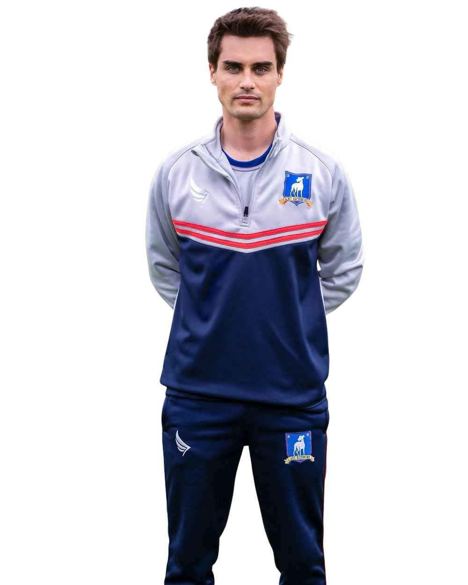

8
← Back to squad
RichardMontlaur
- Position
- Centre Midfield
- Squad number
- 8
- Nationality
- French
- Birthplace
- Cordon, Haute-Savoie, France
- Former club
- Newcastle United
Richard Montlaur is a French midfielder who brings experience and technical quality to AFC Richmond's midfield. Born in Haute-Savoie, France, Montlaur previously played for Newcastle United before joining the Greyhounds.
Comfortable in possession and capable of contributing creatively, Richard is an experienced member of the Richmond squad. His ability to operate through central areas gives the team another option when building attacks from midfield.
Known for his confident personality and distinctly French character, Montlaur has become a familiar presence in both the Richmond first team and dressing room.